Geberit AquaClean Sela 146.140 native-DWG review Grey = actual IFC Body; black = proxy; blue = exact official 146.140.11.1 G/A/L native DWG. Single-product style approved; product-level derived IFC exists. Scene location remains pending user review.
Latest: three planes in shared 3D world coordinates and corrected room-facing Front scene SVG (2026-09-07)
Manifest Candidate paths Profile Official linework Source record Official source folder Full project plan Project front elevation Project side elevation Bonsai evidence Official product page Project drawing context Plan · instance 0UtU7 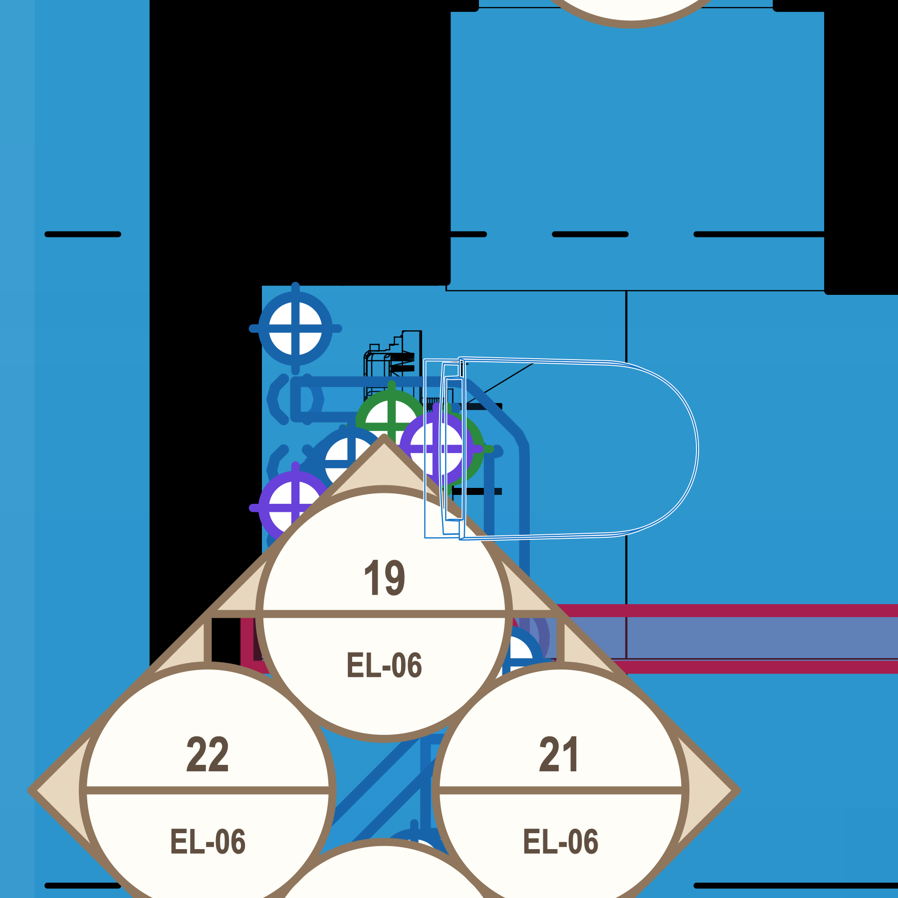
Plan · instance 1rhZG 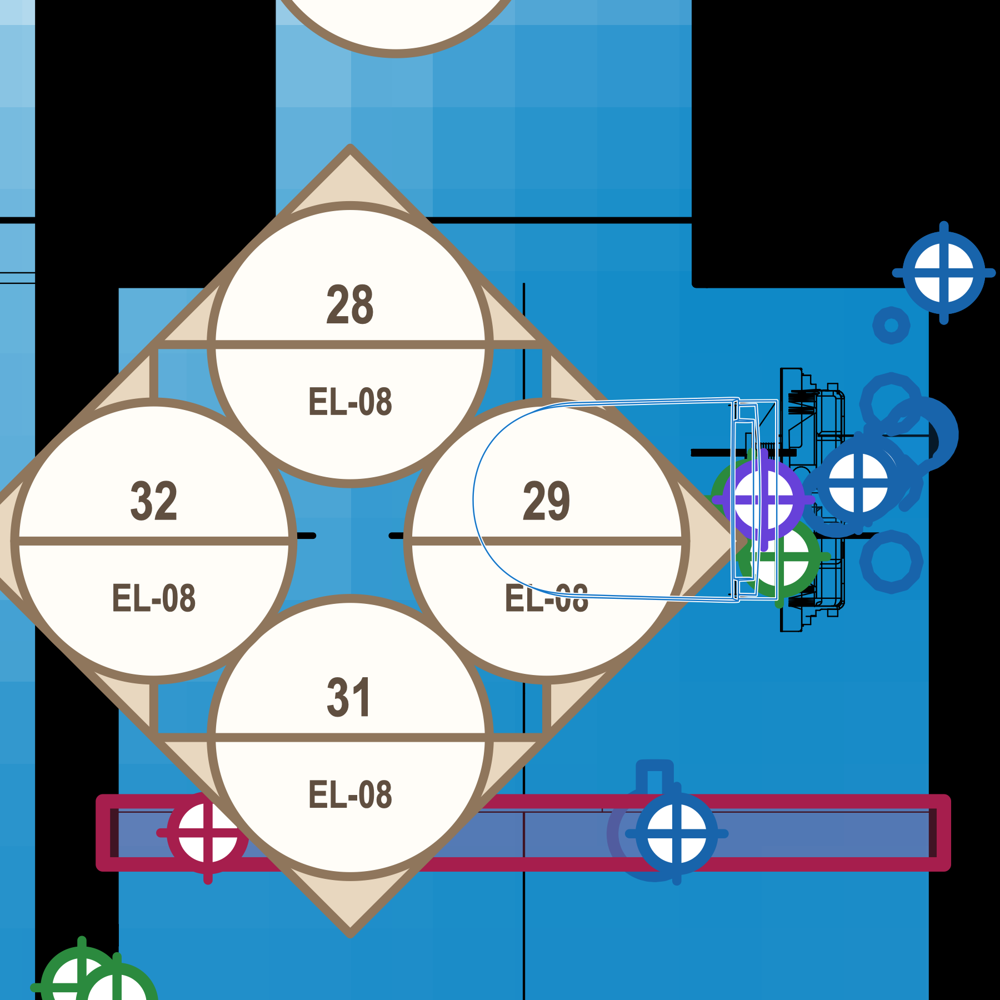
Front elevation 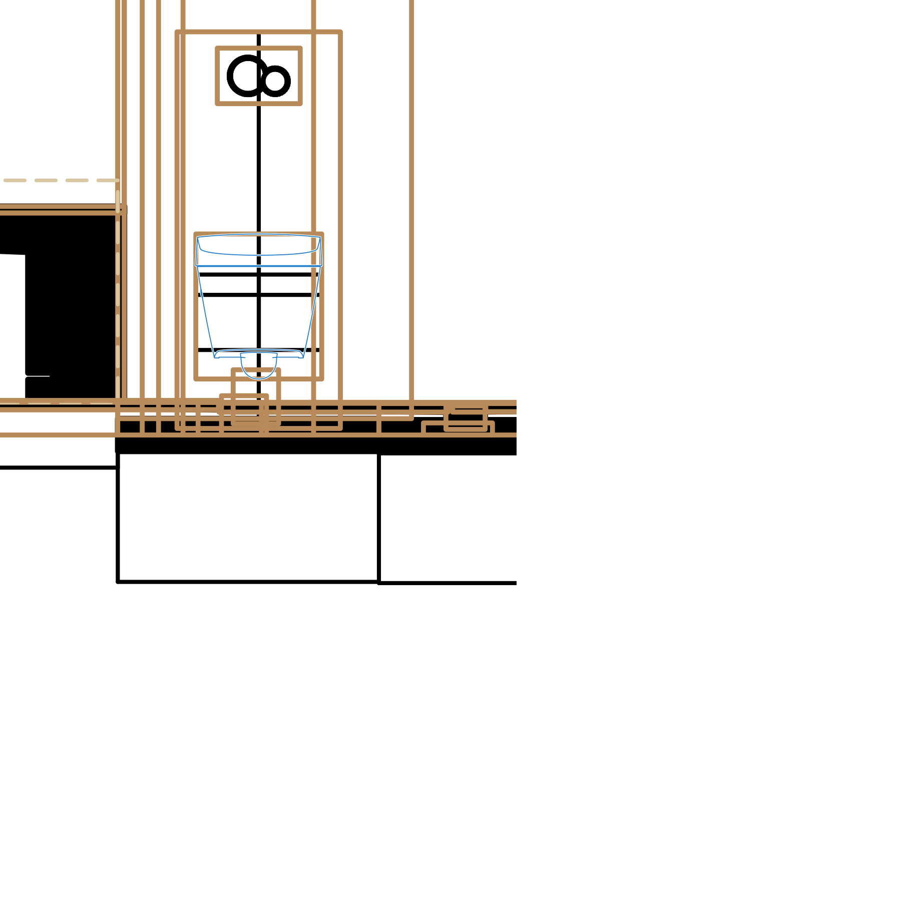
Side elevation 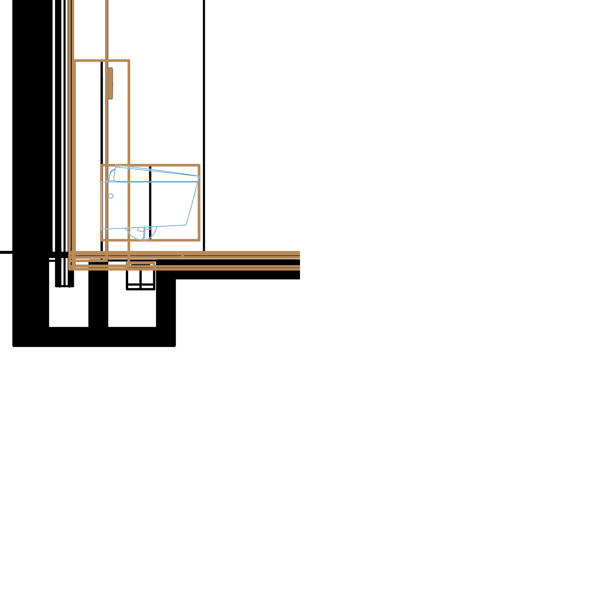
DWG / IFC mechanical overlay Plan 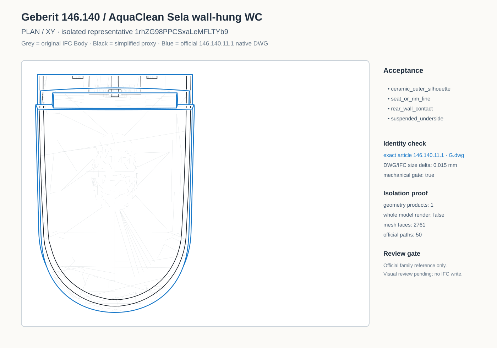
Front 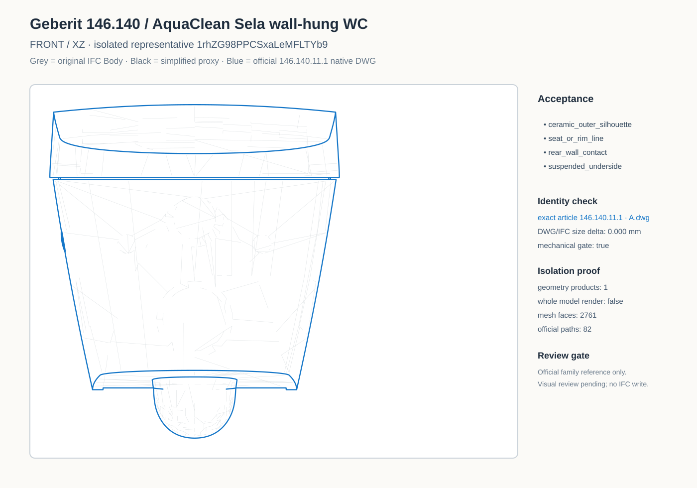
Side 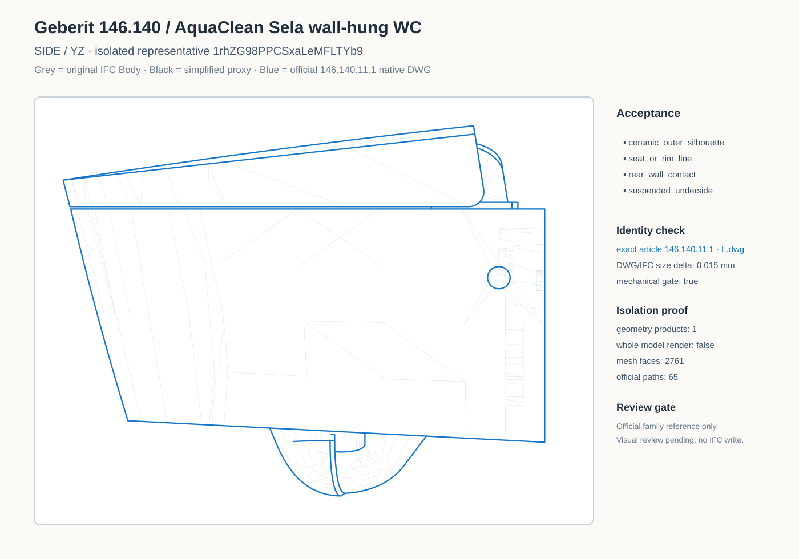
Actual Bonsai camera renders from isolated IFC Body Bonsai Plan 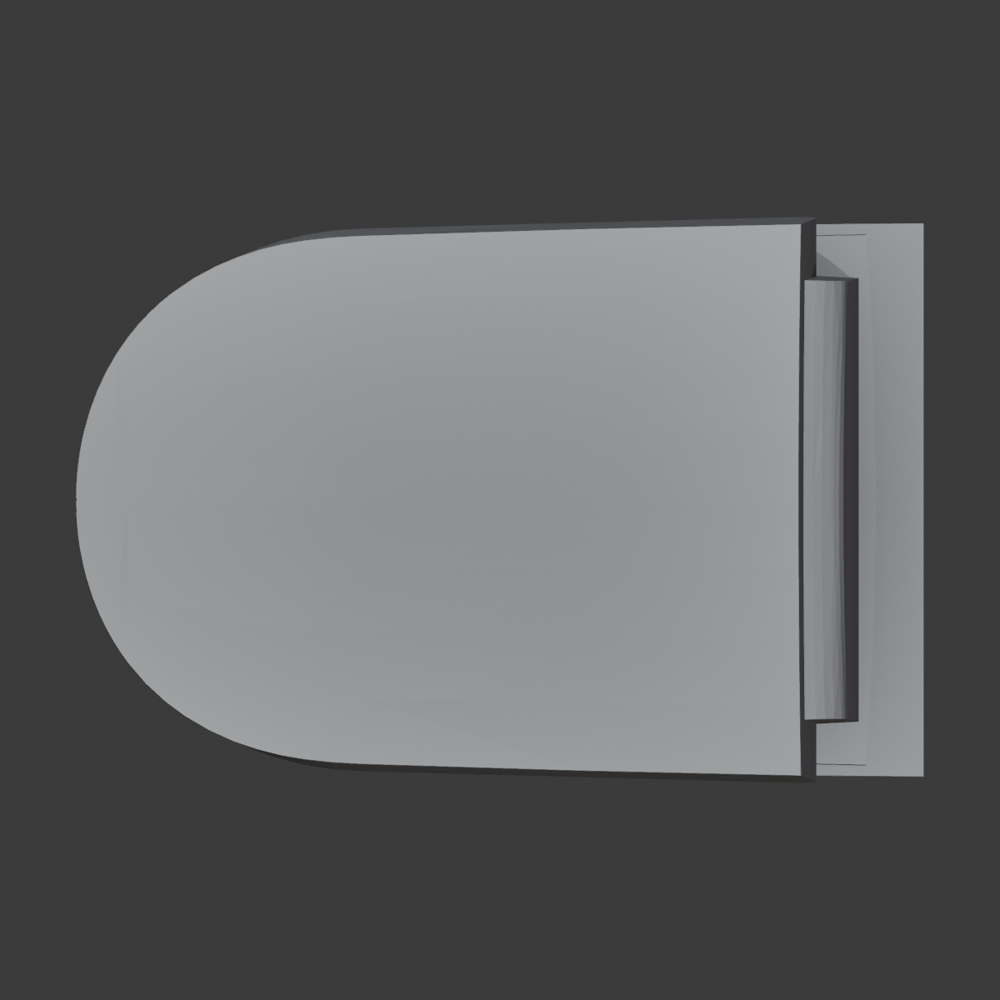
Bonsai Front 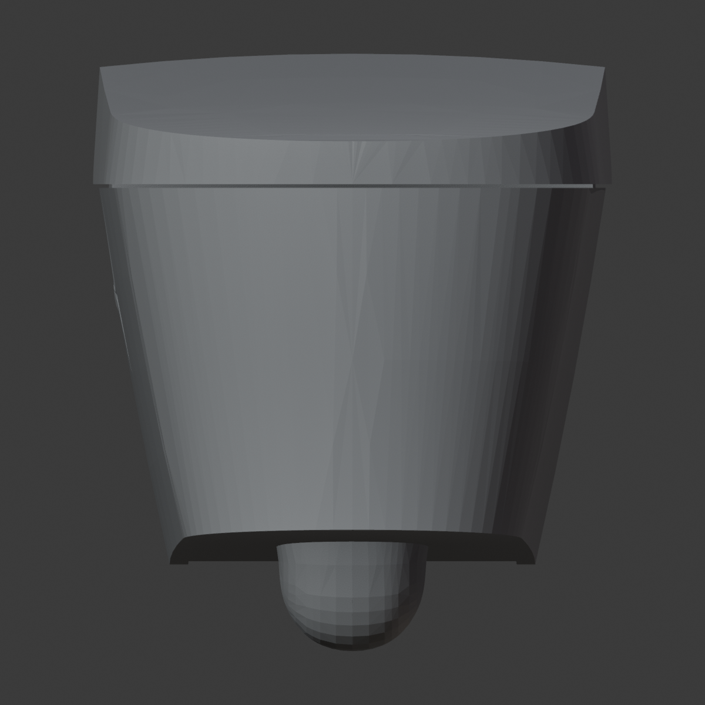
Bonsai Side 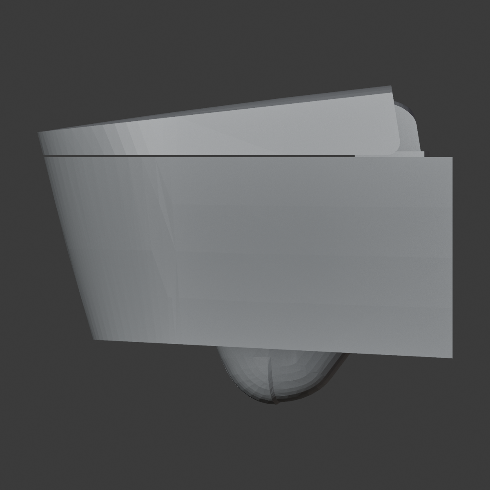
Bonsai Iso 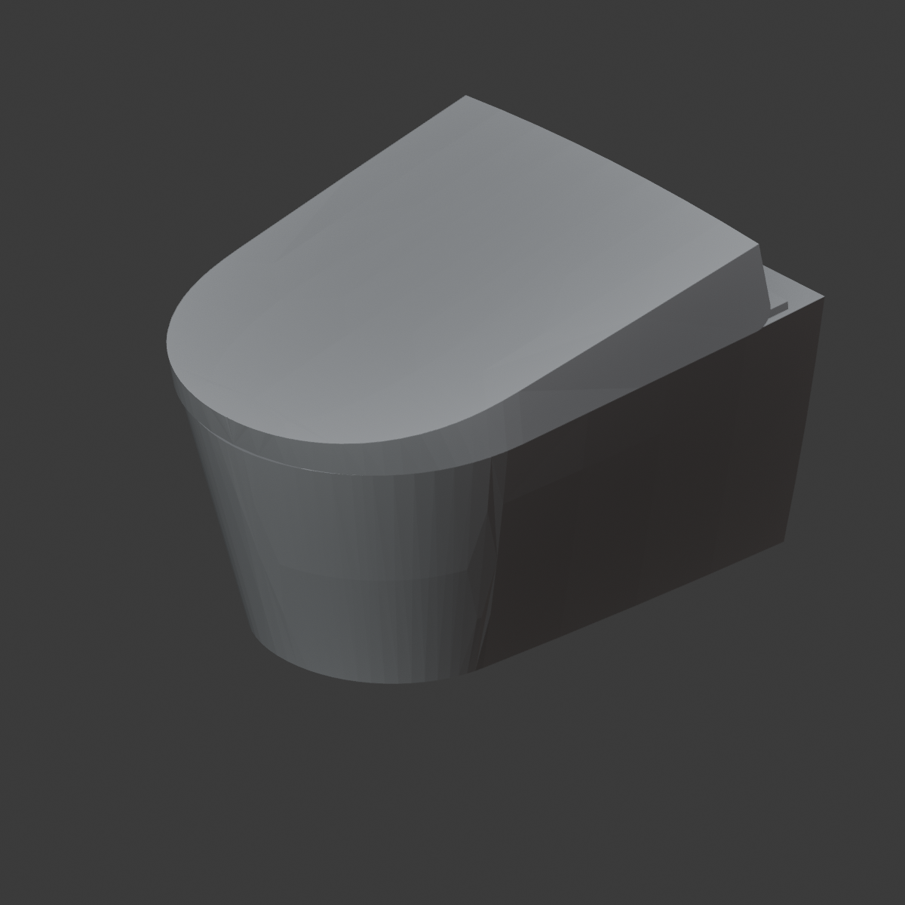
7a50b87e8f48a7c2bfbaa9f1dabdfca7155fa684b2325c66aa1ae15c8ab0a25c